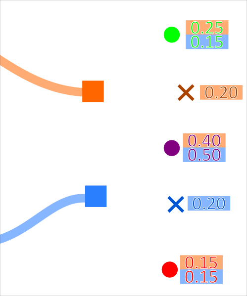
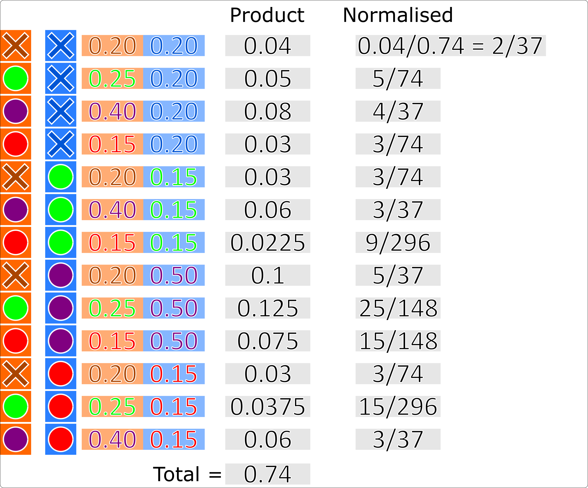
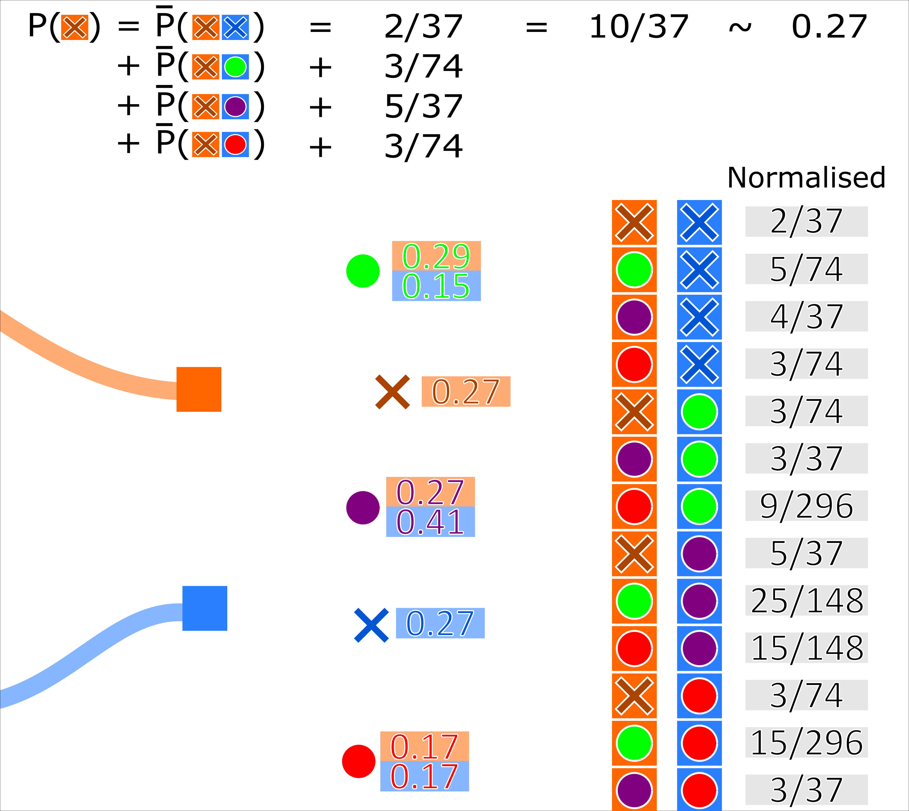

Note
Click here to download the full example code or to run this example in your browser via Binder
8 - Joint probabilistic data association tutorial
When we have multiple targets we’re going to want to arrive at a globally-consistent collection of associations for PDA, in much the same way as we did for the global nearest neighbour associator. This is the purpose of the joint probabilistic data association (JPDA) filter.
Similar to the PDA, the JPDA algorithm calculates hypothesis pairs for every measurement for every track. The probability of a track-measurement hypothesis is calculated by the sum of normalised conditional probabilities that every other track is associated to every other measurement (including missed detection). For example, with 3 tracks \((A, B, C)\) and 3 measurements \((x, y, z)\) (including missed detection \(None\)), the probability of track \(A\) being associated with measurement \(x\) (\(A \to x\)) is given by:
where \(\bar{p}(\textit{multi-hypothesis})\) is the normalised probability of the multi-hypothesis.
This is demonstrated for 2 tracks associating to 3 measurements in the diagrams below:
{kind=link}
Where the probability (for example) of the orange track associating to the green measurement is \(0.25\). The probability of every possible association set is calculated. These probabilities are then normalised.
{kind=link}
A track-measurement hypothesis weight is then recalculated as the sum of the probabilities of every occurrence where that track associates to that measurement.
{kind=link}
Simulate ground truth
As with the multi-target data association tutorial, we simulate two targets moving in the positive x, y Cartesian plane (intersecting approximately half-way through their transition). We then add truth detections with clutter at each time-step.
from datetime import datetime
from datetime import timedelta
import numpy as np
from scipy.stats import uniform
from smartfusion.models.transition.linear import CombinedLinearGaussianTransitionModel, \
ConstantVelocity
from smartfusion.types.groundtruth import GroundTruthPath, GroundTruthState
from smartfusion.types.detection import TrueDetection
from smartfusion.types.detection import Clutter
from smartfusion.models.measurement.linear import LinearGaussian
np.random.seed(1991)
truths = set()
start_time = datetime.now()
transition_model = CombinedLinearGaussianTransitionModel([ConstantVelocity(0.005),
ConstantVelocity(0.005)])
truth = GroundTruthPath([GroundTruthState([0, 1, 0, 1], timestamp=start_time)])
for k in range(1, 21):
truth.append(GroundTruthState(
transition_model.function(truth[k-1], noise=True, time_interval=timedelta(seconds=1)),
timestamp=start_time+timedelta(seconds=k)))
truths.add(truth)
truth = GroundTruthPath([GroundTruthState([0, 1, 20, -1], timestamp=start_time)])
for k in range(1, 21):
truth.append(GroundTruthState(
transition_model.function(truth[k-1], noise=True, time_interval=timedelta(seconds=1)),
timestamp=start_time+timedelta(seconds=k)))
truths.add(truth)
# Plot ground truth.
from smartfusion.plotter import Plotterly
plotter = Plotterly()
plotter.plot_ground_truths(truths, [0, 2])
# Generate measurements.
all_measurements = []
measurement_model = LinearGaussian(
ndim_state=4,
mapping=(0, 2),
noise_covar=np.array([[0.75, 0],
[0, 0.75]])
)
prob_detect = 0.9 # 90% chance of detection.
for k in range(20):
measurement_set = set()
for truth in truths:
# Generate actual detection from the state with a 10% chance that no detection is received.
if np.random.rand() <= prob_detect:
measurement = measurement_model.function(truth[k], noise=True)
measurement_set.add(TrueDetection(state_vector=measurement,
groundtruth_path=truth,
timestamp=truth[k].timestamp,
measurement_model=measurement_model))
# Generate clutter at this time-step
truth_x = truth[k].state_vector[0]
truth_y = truth[k].state_vector[2]
for _ in range(np.random.randint(10)):
x = uniform.rvs(truth_x - 10, 20)
y = uniform.rvs(truth_y - 10, 20)
measurement_set.add(Clutter(np.array([[x], [y]]), timestamp=truth[k].timestamp,
measurement_model=measurement_model))
all_measurements.append(measurement_set)
# Plot true detections and clutter.
plotter.plot_measurements(all_measurements, [0, 2])
plotter.fig
from smartfusion.predictor.kalman import KalmanPredictor
predictor = KalmanPredictor(transition_model)
from smartfusion.updater.kalman import KalmanUpdater
updater = KalmanUpdater(measurement_model)
Initial hypotheses are calculated (per track) in the same manner as the PDA.
Therefore, in SMART FUSION, the JPDA filter uses the PDAHypothesiser to create these
hypotheses.
Unlike the PDA data associator, in SMART FUSION, the JPDA associator takes
this collection of hypotheses and adjusts their weights according to the method described above,
before returning key-value pairs of tracks and detections to be associated with them.
from smartfusion.hypothesiser.probability import PDAHypothesiser
# This doesn't need to be created again, but for the sake of visualising the process, it has been
# added.
hypothesiser = PDAHypothesiser(predictor=predictor,
updater=updater,
clutter_spatial_density=0.125,
prob_detect=prob_detect)
from smartfusion.dataassociator.probability import JPDA
data_associator = JPDA(hypothesiser=hypothesiser)
Running the JPDA filter
from smartfusion.types.state import GaussianState
from smartfusion.types.track import Track
from smartfusion.types.array import StateVectors
from smartfusion.functions import gm_reduce_single
from smartfusion.types.update import GaussianStateUpdate
prior1 = GaussianState([[0], [1], [0], [1]], np.diag([1.5, 0.5, 1.5, 0.5]), timestamp=start_time)
prior2 = GaussianState([[0], [1], [20], [-1]], np.diag([1.5, 0.5, 1.5, 0.5]), timestamp=start_time)
tracks = {Track([prior1]), Track([prior2])}
for n, measurements in enumerate(all_measurements):
hypotheses = data_associator.associate(tracks,
measurements,
start_time + timedelta(seconds=n))
# Loop through each track, performing the association step with weights adjusted according to
# JPDA.
for track in tracks:
track_hypotheses = hypotheses[track]
posterior_states = []
posterior_state_weights = []
for hypothesis in track_hypotheses:
if not hypothesis:
posterior_states.append(hypothesis.prediction)
else:
posterior_state = updater.update(hypothesis)
posterior_states.append(posterior_state)
posterior_state_weights.append(hypothesis.probability)
means = StateVectors([state.state_vector for state in posterior_states])
covars = np.stack([state.covar for state in posterior_states], axis=2)
weights = np.asarray(posterior_state_weights)
# Reduce mixture of states to one posterior estimate Gaussian.
post_mean, post_covar = gm_reduce_single(means, covars, weights)
# Add a Gaussian state approximation to the track.
track.append(GaussianStateUpdate(
post_mean, post_covar,
track_hypotheses,
track_hypotheses[0].measurement.timestamp))
Plot the resulting tracks.
plotter.plot_tracks(tracks, [0, 2], uncertainty=True)
plotter.fig
References
1. Bar-Shalom Y, Daum F, Huang F 2009, The Probabilistic Data Association Filter, IEEE Control Systems Magazine
Total running time of the script: ( 0 minutes 0.453 seconds)